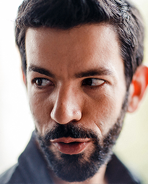
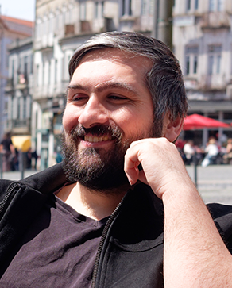

The Bachelor's degree in Video Games and Multimedia Applications focuses on comprehensive training, allowing students to learn about the main areas within video game and multimedia application development. Learn more about the three levels of your degree's game that will allow you to find your own path and area of specialization.
LEVEL 1: TUTORIAL
The Beginning - Learn the theory and basic tools.
1st Semester - Level 1.1
Video Game Criticism and Analysis
You know how to play, but do you really know how to analyze a game?
History of Video Games
Learn the history of game development, decade by decade.
Introduction to Digital Imaging
Learn basic image creation tools (even if you don't know how to draw!).
Communication Design
Understand notions of design, color, balance, and legibility (you want to make beautiful games, right?).
Programming Fundamentals
Learn the bases and fundamentals of programming.
Creative Programming
Apply programming to concrete situations in a practical and creative way using Godot.
2nd Semester - Level 1.2
Script and Interactive Narratives
Learn how to create non-linear stories and narratives.
Interaction Design
For someone to understand your creations, you must learn the notions of interaction and usability.
2D Digital Animation
Bring your characters to life by creating animation sets for games, frame-by-frame or using bones.
Digital Illustration I
Learn to create backgrounds, characters, and sprites using various techniques.
Computer Graphics
Understand how computer graphics work and create your first 3D models.
Programming Languages I
Develop knowledge of programming and C# using Unity 3D.
LEVEL 2: MAIN QUEST
The Middle - Venture out and find your own path.
1st Semester - Level 2.1
Multimedia Application Development
Discover the huge variety and potential of multimedia applications.
Digital Illustration II
Develop your own style and explore the creation of unique graphic styles.
Game Systems and Engines
Understand different systems and engines by creating a series of micro-games.
3D Modeling
Practice modeling and texturing props, environments, and characters.
Programming Languages II
Deepen your knowledge of programming for games.
Game Design Project I
Pitch an idea, work in a team, and create your first 2D game.
2nd Semester - Level 2.2
Contemporary Media
Understand media in its various forms, from games to movies and even memes!
Multimedia and Web Production Workshop
Explore all the possibilities and creativity of the web.
Introduction to Sound Design
Learn to create immersive sound environments.
3D Digital Animation
Bring your 3D models to life and animate your heroes and NPCs.
Programming Languages III
Develop complex systems and learn to use Unreal Engine.
Game Design Project II
Did you enjoy creating games? The challenge is now even greater, make your 3D game.
LEVEL 3: FINAL BOSS
The End - You've developed your skills, it's time to face the final boss.
1st Semester - Level 3.1
Digital Arts Workshop
Explore computer vision, sensors, and alternative ways to produce digital art.
Video Game and Multimedia Application Production Workshop I
Start your final course project.
Audiovisual Technologies
Learn audiovisual language to create even more cinematic games.
2nd Semester - Level 3.2
Video Game and Multimedia Application Production Workshop II
Finish the course with your most ambitious project.
Marketing and Advertising Workshop
Create a marketing strategy and make everyone talk about your project.
Internship and Professional Integration
You are ready to face professional life, show what you are worth in your internship!
FACULTY MEMBERS
João Alves de Sousa
Course Director - PhD in Interactive Art, Specialist in Digital Imaging, Game Design, and AnimationHighlighted Creations:
- Free that Fish (video game presented at Comic Con Portugal, Lisbon Games Week, and The Very Big Indie Pitch - Pocket Gamer Connects London, 2015).
- Lots of Guts (Winner of Most Innovative Game at the Playstation Portugal Awards 2015).
- Porquê (Animation winner of the Young Portuguese Filmmaker Award – Cinanima 2006).

André Carita
Course Co-director - Specialist in History, Theory, and Game DesignHighlighted Creations:
- Author of the book "A Fotografia nos Videojogos - Um ensaio Fotográfico ao The Last of Us Part II" (2023).
- Co-author of the book "A Visão Crítica do Estudante: Videojogos Independentes" (2023).
- Author of the book "Pensar Videojogos: Design, Arte e Comunicação" (2015).
Ricardo Mota
Specialist in Design, Production, Team Management, and Game MarketingHighlighted Creations:
- Communications & Studio Manager at Krafton (PUBG Studios).
- Thunder Tier One, PUBG Black Budget.
- Co-founder of the Indie X game festival, Editor at Rubber Chicken Games.

Rodrigo Carvalho
PhD in Digital Media - Specialist in Digital Art and Motion GraphicsHighlighted Creations:
- 30xN - Audiovisual Performance (SÓNAR, Istanbul; GNRATION, Braga; SERRALVES, Porto; CONVENTO SÃO FRANCISCO, Coimbra; 2024-2026).
- Vanishing Quasars - Audiovisual Performance (ELECTROALTERNATIVE, Toulouse; FOTONICA, Rome; CRIATECH, Aveiro; 948MERKABA, Pamplona; MAPPING FESTIVAL, Geneva; VOLUMENS DAY, Valencia; SÓNAR, Lisbon; 2019-2023).
- Multiverse - Audiovisual Performance (SÓNAR, Barcelona; BAM, Liège; STEREOLUX, Nantes; ADAF, Athens; ECHO, Dubai; BRIGHTBRUSSELS, Brussels; 2016-2019).
Vanessa Rodrigues
PhD and Specialist in Audiovisual ProductionHighlighted Creations:
- Director and Screenwriter: "O Feitiço de Areia" (82', Portugal/Mozambique, 2025), documentary film: in distribution (2026).
- Director, Producer, and Screenwriter: "Baptismo de Terra" (90', Portugal/Brazil, 2015), documentary film (Special Mention at Avanca Film Festival, 2017; Terres/Spain Award for Best Soundtrack, 2018; Best Cinematography Award - Hollywood Women's Film Festival, 2019).
- Director and Screenwriter: "Palestina, Diários de um lugar incerto" (37', West Bank/Jordan, 2013), TSF audio-documentary (Honorable Mention, UNESCO Award - Journalism, Integration & Human Rights).

José Raimundo
PhD in Digital Media - Specialist in Illustration and 3DHighlighted Creations:
- Coordinator of the international project "Virtual Production Studio Networks".
- "The case of See, Hear, Touch no Evil" and "Bully Who?". Board/digital games (DIGICOM 2018 and 2019).
- Second place at the 4th International Illustration Competition, Treviso, Italy (2016).
Eduardo Magalhães
Lecturer and Researcher - Specialist in Sound Design and Multimedia TechnologiesHighlighted Creations:
- Oktoberfest VR (Winner of AUREA AWARDS 2026 in the immersion category).
- Oktoberfest VR (Finalist of XR Awards - AIXR 2026 for best game of the year).
- Beneath (Notable nomination for Game of the Year at the Spotlight Awards 2025 and featured at the Horror Game Awards 2025).
Filipe Coelho
Specialist in Programming and Game EnginesHighlighted Creations:
- Flat Fat Fartfest (3D Platformer, PC, 2024).
- Whatta Frogs (Social Multiplayer, PC, 2026).
- Mirage Blocks (Puzzle, Mobile, 2023).

Henrique Basto
Specialist in Programming and Game EnginesHighlighted Creations:
- Dakar 18 (Bigmoon Games) - PS4, XBox One.
- Super Nanny Sleepytime (awarded by Gamejolt and exhibited at GDC 2016).
- Programmer at Mindera Gaming.
Hugo Barbosa
Specialist in Multimedia Technologies and WebHighlighted Creations:
- Systems Administrator (Microsoft Windows, Linux, and Mac OS X networks).
- Analyst and Database Manager: MySql, Oracle, Microsoft SQL Server.
- Researcher in the field of Serious Games, Virtual Reality, Simulation, Player Adaptivity, Cybersecurity, and Computer Networks.

Andreia Pinto de Sousa
PhD in Information and Communication — Digital Media DesignerHighlighted Creations:
- Sousa Andreia and Pereira, Ana Sofia and Taborda Célia and Cerqueira Carla and Drofa Irina de. 2026. ‘A Cartography of Portuguese Feminisms: Memory as Resistance, Mapping as Mobilisation’. In HCI International. Springer Nature Switzerland.
- Giesteira, Bruno, Tainá Souza, Andreia Sousa, Liliana Rodrigues, and Guilherme Vila Maior. 2026. ‘Ikigai Play: Towards an Ikigai Paradigm of Healthy and Active Ageing in Europe’. In Reshaping Health Promotion and Disease Prevention Through Digital Innovation. IGI Global Scientific Publishing.
- Sousa, A. P. de, T. Freitas, J. Karnikowski, et al. 2025. ‘Designing for Engagement: A Co-Created VR Game for Upper Limb Rehabilitation’. 2025 IEEE Conference on Games (CoG).